Las armaduras son unos de los objetos mas importantes del juego, nos brindan defensa y nos aumentan atributos
| Nombre | Casco | Camisa | Pantalones | Total | Efectos | ||||
|---|---|---|---|---|---|---|---|---|---|
| 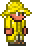 | Armadura para la lluvia | 1 | 2 | 0 | 3 | Ninguno | |||
| 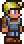 | Armadura de minero | 1 | 1 | 1 | 3 |
Set completo: +30% velocidad de minería | |||
| 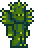 | Armadura de cactus | 1 | 1 | 1 | 3 | Set completo: Los enemigos sufren daño al atacar cuerpo a cuerpo. | |||
| 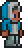 | Armadura de esquimal | 1 | 2 | 1 | 4 | Ninguno | |||
| 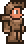 | Armadura de madera | 1 | 1 | 0 | 2 (3) | Set completo: +1 defensa | |||
| 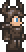 | Armadura de madera boreal | 1 | 1 | 1 | 3 (4) | Set completo: +1 defensa | |||
| 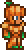 | Armadura de calabaza | 2 | 3 | 2 | 7 | Set completo: +10% daño | |||
| 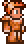 | Armadura de cobre | 1 | 2 | 1 | 4 (6) | Set completo: +2 defensa | |||
| 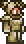 | Armadura de estaño | 2 | 2 | 1 | 5 (7) | Set completo: +2 defensa | |||
| Armadura de hierro | 2 | 3 | 2 | 7 (9) | Set completo: +2 defensa | ||||
| 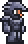 | Armadura de plomo | 3 | 3 | 2 | 8 (11) | Set completo: +3 defensa | |||
| Armadura de plata | 3 | 4 | 3 | 10 (13) | Set completo: +3 defensa | ||||
| 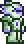 | Armadura de tungsteno | 4 | 5 | 3 | 12 (15) | Set completo: +3 defensa | |||
| 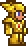 | Armadura de oro | 4 | 5 | 4 | 13 (16) | Set completo: +3 defensa | |||
| Armadura de platino | 5 | 6 | 5 | 16 (20) | Set completo: +4 defensa | ||||
| 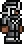 | Armadura de ninja | 2 | 4 | 3 | 9 | +9% probabilidad de ataque critico Set completo: 20% velocidad de movimiento | |||
| 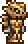 | Armadura de fósil | 4 | 5 | 4 | 13 | +9% probabilidad de ataque critico a distancia. Set completo: +20% de no consumir munición | |||
| 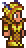 | Armadura de abeja | 4 | 5 | 4 | 13 | +13% daño a súbditos +2 súbditos Set completo:+10% daño a súbditos | |||
| 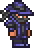 | Armadura de obsidiana | 4 | 6 | 5 | 15 | +16% daño a súbditos
+1 súbdito Set completo:+50% alcance de látigo +35% velocidad de látigo +15% daño a súbditos | |||
| 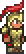 | Armadura de gladiador | 5 | 6 | 5 | 16 | Set completo: Inmunidad al retroceso | |||
| 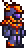 | Armadura de meteorito | 5 | 6 | 5 | 16 | +21% daño mágico Set completo: La pistola espacial no gasta maná. | |||
| 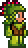 | Armadura para la selva | 5 | 6 | 6 | 17 | +80 de maná +12% probabilidad de ataque mágico crítico Set completo:-16% consumo de maná. | |||
| 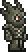 | Armadura de los muertos | 6 | 7 | 6 | 19 | +15% de daño a distancia Set completo: +10% de probabilidad de golpe crítico a distancia +20% probabilidad de no consumir munición. (Resto de versiones) | |||
| 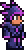 | Armadura de las sombras | 6 | 7 | 6 | 19 | +21% velocidad ataque cuerpo a cuerpo. Set completo:+15% velocidad de movimiento. | |||
| Armadura carmesí | 6 | 7 | 6 | 19 | +6% daño Set completo: Más regeneración de vida | ||||
| 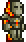 | Armadura fundida | 8 | 9 | 8 | 25 | +7% probabilidad crítica del cuerpo a cuerpo
+7% daño del cuerpo a cuerpo +7% velocidad de ataque del cuerpo a cuerpo Set completo:+10% daño del cuerpo a cuerpo El jugador no sufrirá el debuff En Llamas | |||
|
Las mejores armaduras del Modo normal son:
| |||||||||